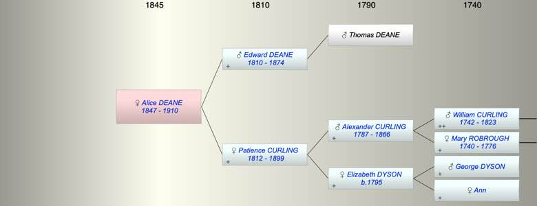

| [Index] |
| Alice DEANE (1847 - 1910) |
|  |
| b. 1847 |
| d. 1910 aged 63 |
| Parents: |
| Edward DEANE (1810 - 1874) |
| Patience CURLING (1812 - 1899) |
| Siblings (5): |
| Elizabeth DEANE (1846 - ) |
| Sarah DEANE (1849 - ) |
| Selina DEANE (1851 - ) |
| Ellen DEANE (1853 - ) |
| Anne DEANE (1854 - ) |
| Events in Alice DEANE (1847 - 1910)'s life | |||||
| Date | Age | Event | Place | Notes | Src |
| 1847 | Alice DEANE was born | ex census | |||
| 23 Mar 1874 | 27 | Death of father Edward DEANE (aged 64) | of Denmark Hill ex Probate | ||
| 23 Apr 1899 | 52 | Death of mother Patience CURLING (aged 86) | Streatham | Note 1 | |
| 1910 | 63 | Alice DEANE died | |||
| Note 1: of Fernleigh, Leigham Court Road, Streatham widow, Buried Norwood Cemetery. ex Probate |
| Created on a Mac™ using iFamily for Mac™ on 8 Oct 2023 |